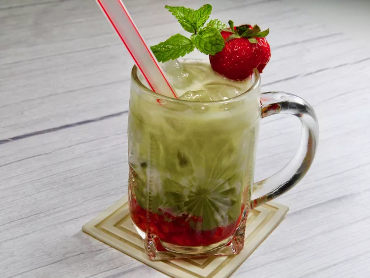

Home
Straberry Matcha Latte

This strawberry matcha latte is a refreshing ice-cold latte and went viral on social media. It’s so simple to make at home and much more budget-friendly than Starbucks. The earthy matcha tea flavor is the perfect partner to the sweet strawberries.
Ingredients:
- 1/3 cup finely chopped fresh strawberries (about 4 to 5 strawberries)
- 1 tablespoon white sugar, or to taste
- 1/4 cup boiling water
- 1 teaspoon matcha green tea powder
- ice as needed
- 1/2 cup unsweetened vanilla almond milk, or milk of your choice
Directions:
- Combine strawberries and sugar in a small bowl. Use a fork to lightly crush and mix (or use a muddler), and spoon into a glass.
- Whisk boiling water and matcha powder in a bowl or cup until well combined and smooth; set aside.
- Top crushed strawberries with a handful of ice. Slowly pour milk on top of the strawberry-ice mixture, followed by matcha. Stir and serve with a wide straw.
Note:
The amount of sugar is dependent on the sweetness of the berries, as well as your personal taste preference. If you’d like the latte to have a stronger matcha flavor, just use more of the powder.